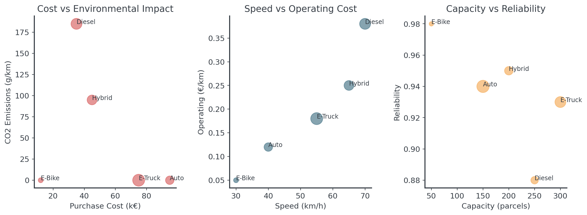
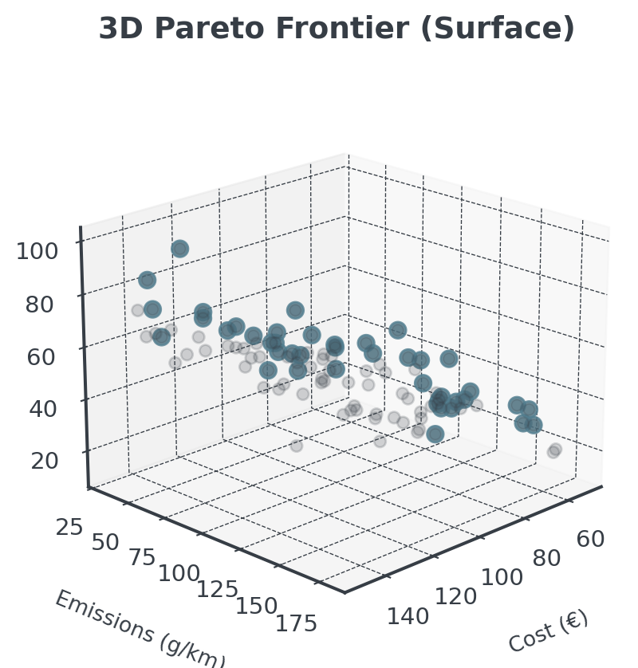
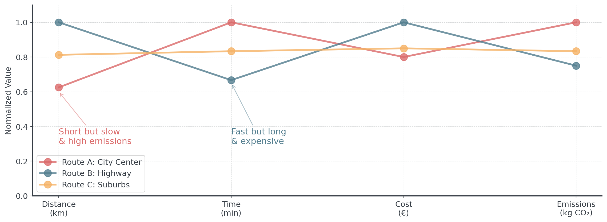
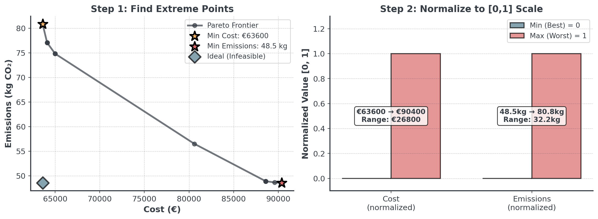
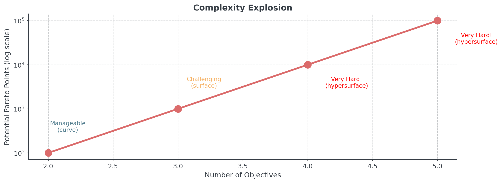
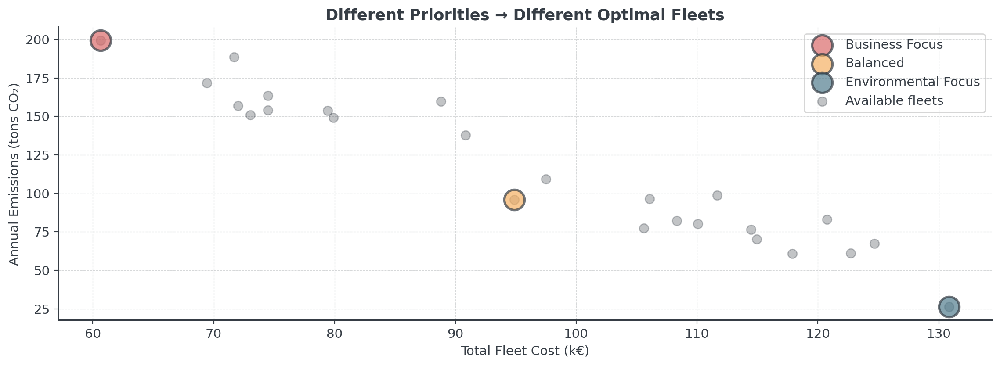

| Type | Purchase Cost (€) | Operating (€/km) | CO2 (g/km) | Speed (km/h) | Capacity (parcels) | Range (km) |
|---|---|---|---|---|---|---|
| E-Truck | 75000 | 0.18 | 0 | 55 | 300 | 250 |
| Hybrid Van | 45000 | 0.25 | 95 | 65 | 200 | 600 |
| Diesel Van | 35000 | 0.38 | 185 | 70 | 250 | 800 |
| E-Cargo Bike | 12000 | 0.05 | 0 | 30 | 50 | 60 |
| Autonomous | 95000 | 0.12 | 0 | 40 | 150 | 180 |
Multi-Objective Optimization
Lecture 8 - Management Science
Introduction
Client Briefing: EcoExpress Logistics
. . .
Operations Director’s Dilemma:
“EU regulations demand 40% emission cuts, but we can’t sacrifice profitability, service quality, or reliability!”
The Fleet Challenge
EcoExpress operates regional last-mile delivery across 3 cities
- EU Green Deal: 40% emission reduction by 2025
- Rising fuel costs (€2.1/L diesel)
- Amazon entering our market (speed pressure)
- Driver shortage (need automation-friendly vehicles)
. . .
Question: How do we transform our fleet while staying competitive?
Today’s Learning Objectives
By the end of this lecture, you will be able to:
- Explain why most real business decisions involve multiple competing objectives
- Identify and visualize Pareto optimal solutions in multi-objective problems
- Apply normalization techniques to make objectives comparable
- Implement weighted sum and ε-constraint methods to find trade-off solutions
- Choose the appropriate MOO method for different problem types
- Make data-driven decisions from a Pareto frontier
- Analyze real-world multi-objective trade-offs (Amazon, airlines, Tesla)
Quick Recap: Local Search
Last week we optimized routes for delivery:
- Started with greedy construction (e.g. Nearest Neighbor)
- Improved with local search (e.g. 2-opt)
- Considered time windows
- But: We only optimized distance
. . .
Question: What if we also care about emissions, cost, AND customer satisfaction?
The Problem
Single vs Multi-Objective
Single Objective
- “Minimize total distance”
- Clear winner. Easy, right!
. . .
Multiple Objectives
- “Minimize cost AND emissions AND maximize speed”
- No clear answer…
. . .
Question: Any idea how to approach this?
EcoExpress Vehicle Options
. . .
Question: Which vehicle is “best” for EcoExpress?
Trade-offs Everywhere

. . .
Every vehicle excels at something different!
Real Business Constraints
Beyond the numbers, consider:
- EU regulations: Carbon tax of €100/ton CO₂ starting 2025
- Competition: Amazon promises 2-hour delivery
- Labor market: Autonomous vehicles reduce driver dependency
- Urban zones: Zero-emission zones in city centers
- Peak times: Black Friday = 3x normal volume
. . .
There is no single “optimal” solution - only trade-offs
Pareto Optimality
Dominated Solutions
A solution is dominated if another solution is:

. . .
Better in at least one objective and not worse in any objective!
The Pareto Frontier
The Pareto frontier is the set of all non-dominated solutions
- No solution is objectively “better”
- Each represents a different trade-off
- Moving along frontier: gain in one objective, loss in another
- Decision makers choose based on preferences
. . .
Question Do you think you get the idea?
Find the Non-Dominated

. . .
Question: Which fleets are non-dominated?
Three+ Objectives
With 3 objectives, the Pareto frontier becomes a surface:

. . .
Harder to visualize, but same principle applies!
Transportation Problem
Multi-Objective Transportation

. . .
Logistics decisions involve trade-offs: City traffic (slow, high emissions), Night delivery? → Highway (fast, but more distance), Customer priority? → Direct route (expensive)
Classic Transportation
Let’s understand the foundation
. . .
| From/To | Zone A | Zone B | Zone C | Zone D | Supply |
|---|---|---|---|---|---|
| DC Berlin | 8 | 10 | 11 | 14 | 300 |
| DC Hamburg | 12 | 9 | 7 | 8 | 250 |
| DC Munich | 15 | 13 | 10 | 9 | 200 |
| Demand | 200 | 180 | 220 | 150 | 750 |
Cost per 100 parcels (€) in the middle of the table!
Objective Function
The foundation of the classical model
\[\text{Minimize } Z = \sum_{i} \sum_{j} c_{ij} \cdot x_{ij}\]
Where:
- \(x_{ij}\) = parcels shipped from DC \(i\) to Zone \(j\)
- \(c_{ij}\) = cost per 100 parcels from \(i\) to \(j\)
Second Objective: Emissions
Now the real challenge - each route has different emissions:
| From/To | Zone A | Zone B | Zone C | Zone D |
|---|---|---|---|---|
| DC Berlin | 120 | 95 | 85 | 70 |
| DC Hamburg | 45 | 110 | 100 | 90 |
| DC Munich | 60 | 50 | 115 | 105 |
Emissions per parcel (g CO₂) in the table
Objective Function II
Now with two objectives!
\[\text{Minimize } Z_1 = \sum_{i} \sum_{j} c_{ij} \cdot x_{ij} \quad \text{(Cost)}\] \[\text{Minimize } Z_2 = \sum_{i} \sum_{j} e_{ij} \cdot x_{ij} \quad \text{(Emissions)}\]
Where \(e_{ij}\) = emissions per parcel from \(i\) to \(j\)
. . .
Notice: Cheapest routes ≠ Greenest routes!
Data Source
Where Do These Numbers Come From?
. . .
Cost Data:
- Historical records: Your accounting system
- Quotes: Request from carriers/suppliers
- APIs: Google Maps Distance Matrix (distance → cost)
. . .
Emissions Data:
- EU Standards or Carrier data
- Formula:
Emissions = Distance × Weight × EmissionFactor
The Transportation Trade-off

Cost increase for greenest solution: +€26800 (42.1%)
Emissions reduction from cheapest: -32.2 kg (39.9%). . .
Each point represents a different allocation strategy!
Solution Approaches
Multi-Objective Optimization
You can use optimization solvers or heuristics!
. . .
With Optimization Solvers
- Weighted Sum Method
- ε-Constraint Method
- Goal Programming
- Optimal solutions
- Need mathematical model
With Heuristics
- Weighted Greedy Construction
- Multi-Objective Local Search
- Metaheuristics
- Good solutions, fast
- No optimality proof
. . .
In this lecture we use heuristic approaches!
Foundation: Extreme Points
First step for BOTH approaches - find the boundaries:

. . .
Question: Why is normalization essential?
Critical: Normalization
Without it, your analysis is meaningless

. . .
Question: Any intuition on how to do [0,1] normalization?
How to Normalize
The Normalization Formula for [0,1]
\[\text{Normalized}_i = \frac{x_i - x_{min}}{x_{max} - x_{min}}\]
. . .
In Python, this is rather simple!
. . .
def normalize_objectives(data):
return (data - data.min()) / (data.max() - data.min())
# Now weights actually mean something
weighted_score = w1 * normalize(cost) + w2 * normalize(emissions). . .
Easy, right?
Extreme Points
There are several reasons why extreme points matter:
- Trade-off Space: Min/max values bound your Pareto frontier
- Enable Proper Normalization: Need ranges for scaling to [0,1]
- Feasibility: If single objectives not achievable, problem infeasible
- Stakeholder: “Best cost is €50k, best emissions is 40kg”
. . .
Implementation Pattern:
def find_extreme_points(problem):
# Solve for minimum cost (ignore emissions)
min_cost_solution = minimize(cost_objective, constraints)
# Solve for minimum emissions (ignore cost)
min_emissions_solution = minimize(emissions_objective, constraints)Computational Complexity
How hard does it get with more objectives?
. . .

. . .
Why? Because there are just way more potential solutions to check!
Solver-Based Methods
Quick overview - you won’t implement these in assignments
- Weighted Sum: Minimize \(w_1 \times \text{cost} + w_2 \times \text{emissions}\)
- Simple, fast for convex problems
- ε-Constraint: Minimize cost subject to emissions \(\leq \varepsilon\)
- Systematically vary \(\varepsilon\) to find complete frontier
- Goal Programming: Minimize deviations from targets
- Set target for each objective, minimize weighted deviations
. . .
For your fleet optimization: You’ll use heuristic approaches instead!
Heuristic Approach
The Heuristic Strategy
For problems without mathematical models
. . .
- Construction: Build initial solutions with weighted greedy
- Improvement: Multi-objective local search
- Selection: Filter dominated solutions to find Pareto frontier
. . .
Key difference from solvers:
- Solvers: Need mathematical model, guarantee optimality
- Heuristics: Work with any evaluation function, find good solutions fast
Why Heuristics?
Depending on the problem:
- Combinatorial explosion
- Huge solution space even for one problem
- Evaluating one solution might thus take too long
- Need diverse Pareto frontier, not just one “optimal” solution
- Open Source Solvers too slow
- Commercial solvers too expensive
. . .
Question: How do we build good solutions without a solver?
The Three-Stage Heuristic Process

. . .
This is what you’ll implement in your assignments!
Construction & Improvement
Construction Methods for MOO
How to build initial solutions when you have multiple objectives?

. . .
Three choices (for starters). Let’s check them out!
Weighted Greedy Construction
Making greedy choices on a weighted objective
- Choose weight vector w = (w₁, w₂)
- At each step, pick the choice that minimizes: \[w_1 \cdot \text{cost}(x) + w_2 \cdot \text{emissions}(x)\]
- Build complete solution greedily
- Repeat with different weights to explore frontier
. . .
Different weights explore different trade-offs! Easy, right?
Sequential Greedy (Lexicographic)
Optimize one objective at a time, in priority order
- Rank objectives by priority
- E.g. cost (most important) and then emissions (tie-breaker)
- At each step:
- Find choices that minimize primary objective
- If tie → use secondary objective
- Build one working solution
. . .
We could also accept primary values within 10% of best so secondary has more influence!
Diverse Starting Pool
Generate many random solutions, keep the non-dominated ones
- Generate N random solutions (e.g., N=100)
- Evaluate all solutions on both objectives
- Filter to keep only non-dominated solutions
- Result: A diverse set of Pareto-optimal solutions
. . .
- Explores entire solution space
- No bias toward specific weights
- Great for warm-starting local search
Local Search for Multi-Objective
Special moves that improve multiple objectives:

. . .
Question: Which moves are acceptable?
MOO Local Search Rules
Accept a move if:
- Dominance: New solution dominates current (win-win!)
- Trade-off: Improves primary, acceptable loss in secondary
- Diversity: Fills gap in current Pareto front
- Probabilistic: Use temperature (like simulated annealing)
. . .
Always keep all your objectives in mind when making decisions.
From Pareto Front to Decision
How to Choose!
- The Knee Point: Find the “elbow” where improvement slows
- Satisficing Levels: Set minimum acceptable thresholds
- Cost must be < €100k (budget constraint)
- Emissions must be < 100 kg (regulatory limit)
- Service level must be > 90% (customer requirement)
- Stakeholder Preferences: Let business priorities guide
- Sustainability: Minimum emissions that meets constraints
- Operations: Maximum service level within budget
Weighted Sum Along the Frontier
The weight influences the final choice:

. . .
The iso-cost lines show the trade-offs between cost and emissions.
Weighting has an Impact
The weights thus reflect your values!

. . .
Depending on your weight, the choice will vary.
Advanced
Speed vs Sustainability Dilemma
The Three-Way Trade-off in E-Commerce
- Minimize Delivery Time (1-day/2-hour promise)
- Minimize Cost (fuel, labor, fulfillment)
- Minimize Environmental Impact (carbon footprint)
. . .
Faster delivery = More vehicles less full = Higher emissions
. . .
Question: What could retailers do?
Moving the Frontier
Instead of point on the frontier, move the entire frontier:
. . .
Question: Any idea of examples?
. . .
R&D can fundamentally change what’s possible!
Briefing
Today
Hour 2: This Lecture
- Multi-objective
- Pareto optimality
- Weighted greedy
- Local search MOO
Hour 3: Notebook
- Bean Counter CEO
- Find Pareto frontier
- Apply weighted greedy
- Normalize objectives
Hour 4: Competition
- Transportation problem
- Fleet selection
- Cost vs emissions
- Justify choice!
The Competition Challenge
EcoExpress Sustainable Fleet Design
. . .
- Solve multi-objective transportation (DCs → Zones)
- Select optimal fleet mix (5 vehicle types)
- Balance cost, emissions, service quality
- Meet EU emission targets (40% reduction)
. . .
Find the best trade-off for your business priorities!
Choosing Your MOO Approach
Different situations call for different methods:
| Situation | Best | Why |
|---|---|---|
| Clear priorities | Sequential greedy | Fast, hierarchy |
| Exploring | Weighted greedy | Different solutions |
| Many solutions | Diverse pool | Builds frontier |
| Quick solution | Single weighted | One good compromise |
| Improve existing | Multi-objective local | Refines trade-offs |
. . .
Competition? Generate diverse pool or weigted, then improve with local search.
Implementation Pitfalls to Avoid
Common bugs that cost you time:
- Forgetting to Normalize
- Always normalize to [0,1] first!
- Optimizing Too Many Objectives
- 2-3: Manageable, 4+: Exponentially harder
- Combine related objectives or use constraints
- Not Checking Solution Feasibility
- Always verify constraints after optimization
Summary
Key Takeaways:
- Real decisions have multiple conflicting objectives
- Pareto frontier shows all rational trade-offs
- Normalization is essential for fair comparison
- Weighted sum works for convex frontiers
- ε-constraint handles non-convex cases
- Weights reflect values, make them explicit
- Visualization crucial for decision-making
Break!
Take 20 minutes, then we start the practice notebook
Next up: You’ll become Bean Counter’s expert
Then: The Sustainability competition